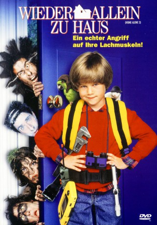

#11771 Wieder allein zu Haus
Alternativ: Home Alone 3 (Englischer Titel)
 
 IMDB-Wertung: 4.4 / 10
IMDB-Wertung: 4.4 / 10  Tomatometer: 29
Tomatometer: 29  Metascore: 0
Metascore: 0 
Vier High-Tech-Industrie-Spione schmieden einen scheinbar brillanten Plan: Beaupre, Alice, Jernigan und Unger stehlen einen neuartigen und streng geheimen Mikrochip, den ein Unternehmen aus dem Silicon Valley entworfen hat, um eine für den Radar nicht sichtbare Rakete zu steuern. Um an den Sicherheitskontrollen am Flughafen vorbeizukommen, verstecken die Ganoven den Chip in einem Spielzeugauto. Doch natürlich läuft nicht alles nach Plan. Durch eine Verwechslung an der Gepäckausgabe kommt Mrs. Hess in den Besitz des Autos. Die ältere Dame verschenkt das Spielzeug an den Nachbarsjungen Alex. Der hütet gerade das Bett: Windpocken! Während seine Eltern in der Arbeit und seine Geschwister in der Schule sind, ist der Achtjährige also ganz allein zu Haus. Einfaches Spiel für Beaupre und seine Bande, die nur in das Haus einbrechen und das Spielzeugauto an sich nehmen müssen. Oder vielleicht auch nicht. Denn Alex ist gut gerüstet für den unliebsamen Besuch…
Jahr: 1997
Dauer: 102 Minuten
FSK: 6
Land: USA Studio: Twentieth Century FoxTonspuren: - , - , - , - , - ,
Untertitel: Deutsch, Englisch,
Auflösung: 1080p (1920x1080) Größe: 6164 MB
Genre: Komödie, Krimi, Familie
Regisseur:  Raja Gosnell
Raja Gosnell
Drehbuch: John Hughes
Soundtrack: Nick Glennie-Smith
Darsteller:
- Alex D. Linz als Alex Pruitt
 Olek Krupa als Petr Beaupre
Olek Krupa als Petr Beaupre- Rya Kihlstedt als Alice Ribbons
- Lenny von Dohlen als Burton Jernigan
 David Thornton als Earl Unger
David Thornton als Earl Unger- Haviland Morris als Karen Pruitt
 Kevin Kilner als Jack Pruitt
Kevin Kilner als Jack Pruitt Marian Seldes als Mrs. Hess
Marian Seldes als Mrs. Hess Scarlett Johansson als Molly Pruitt
Scarlett Johansson als Molly Pruitt Christopher Curry als Agent Stuckey
Christopher Curry als Agent Stuckey James Saito als Chinese Mob Boss
James Saito als Chinese Mob Boss Richard Hamilton als Cab Driver
Richard Hamilton als Cab Driver- Krista Lally als Dispatcher
 Neil Flynn als Police Officer #1
Neil Flynn als Police Officer #1 Pat Healy als Agent Rogers
Pat Healy als Agent Rogers- James Chisem als Police Officer #3
- Darwin Harris als Photographer
- Sharon Sachs als Annoying Woman
- Joseph Luis Caballero als Security Guard
- Andy-John als Police Officer #1 (uncredited)
- Sarah Godshaw als Latchkey Girl (uncredited)
- Jerod Howard als Airline Traveler (uncredited)
 Dominic Paolo Testa als Airline Passenger (uncredited)
Dominic Paolo Testa als Airline Passenger (uncredited)- Seth Smith als Stan Pruitt
- Baxter Harris als Police Captain
- Kevin Gudahl als Techie
- Freeman Coffey als Recruiting Officer
- Tony Mockus Jr. als Police Officer #2
- Adrianne Duncan als Flight Attendant
- Larry C. Tankson als Cart Driver
- Jennifer A. Daley als Police Photographer #2
- Darren T. Knaus als Parrot
- Nick Jantz als Police Officer #4
- Zachary Lee als Johnny Allen (scenes deleted)
- Caryn Cheever als Ticketing Agent (uncredited)
- Leon 'Lee' Fuller als Banker (uncredited)
- Scott Prestin als Head Airport Security Officer (uncredited)
Datei: X:\3-Trilogie(G-M)\Kevin Allein\Wieder allein zu Haus (1997, FSK6, 1920x1080).mkv seit 20.09.2019
Festplatte: HD Collection-2(A-Z)-3(A-M)
 Alle Filme aus Gruppe '3-Trilogie(G-M)\Kevin Allein'
Alle Filme aus Gruppe '3-Trilogie(G-M)\Kevin Allein'